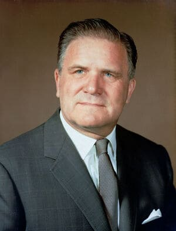
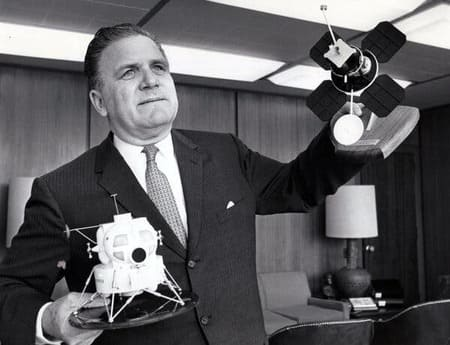
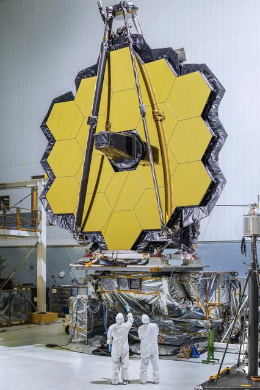

Who, Why, When, and How
Who is James Edwin Webb?
The telescope is named after James Edwin Webb. Webb was NASA's second administrator and he is best know for leading Apollo. He successfully pioneered a space program that had more than 75 launches during his tenure. These launches included America's first interplanetary explorers. More information from the biography for James E. Webb can be found at this linkClick Here
Why was the James Webb Telescope built?
The James Webb Telescope was built to observe farther into our Universe than ever before to understand how galaxies, stars, and planets change over time. Webb can look deeper into space and see the earliest galaxies and starts that formed in the Universe.
When was the James Webb Telescope built?

The telescope's construction began in 2004. All 18 mirror segments were tested and finished to meet the specified requirements by the year 2011. From 2012 and 2013, individual pieces that had been constructed in different locations began to arrive at NASA's Goddard Space Flight Center. Construction of the sunshield layers began in 2013. Between 2013 to 2016 the instrucments on the telescope went through multiple tests of extreme vibrations and temperatures. All the mirrors were installed on the backplane to assemble the mirror from late 2015 to early 2016. In 2017, the scientific instruments and mirrors were connected and tested. Afterwards, they were shipped to NASA's Johnson Space Center in Houston, Texas. More testing along with instrument assembly occured in 2017 at Johnson. Final assembly and more testing occured in 2018 and 2019. Webb was lauched at 7:20 EST on December 25, 2021.